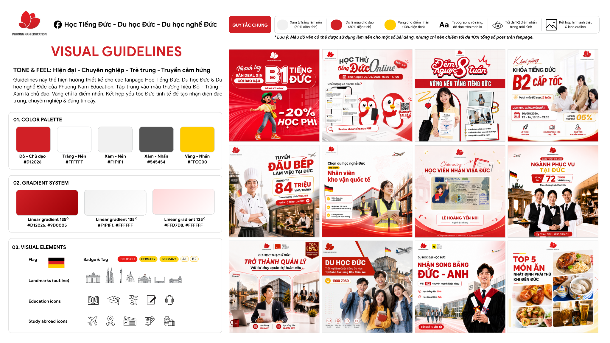

🎨 4.1 · VISUAL GUIDELINES

✅ 4.2 · DO / DON'T KHI TRIỂN KHAI VISUAL
Do/Don't khi triển khai Visual
Bộ quy chuẩn áp dụng cho toàn bộ đội ngũ sáng tạo. Mọi thiết kế cần ưu tiên đúng nhận diện thương hiệu, đồng bộ hệ thống và truyền tải rõ thông điệp. Không đánh đổi tính nhất quán thương hiệu để chạy theo xu hướng thiết kế.
Triết lý Visual (Brand Principles)
✅ Nên🚫 Không nên
✅Thiết kế để truyền tải sự tin cậy, không chỉ để bắt mắt.
🚫Chạy theo xu hướng thiết kế nếu làm mất bản sắc thương hiệu.
✅Ưu tiên rõ ràng và dễ tiếp nhận hơn là nhiều hiệu ứng.
🚫Hy sinh khả năng đọc để đổi lấy hiệu ứng thị giác.
✅Mọi yếu tố đồ họa đều phải phục vụ thông điệp.
🚫Sử dụng các yếu tố tạo cảm giác nặng nề, u tối hoặc giật gân.
✅Giữ cảm giác hiện đại, chuyên nghiệp, trẻ trung và tích cực.
🚫Biến mỗi bài đăng thành một phong cách hoàn toàn mới.
Nhận diện theo quốc gia (Regional Identity)
✅ Nên🚫 Không nên
✅Đức → Đỏ + Trắng + Xám + Vàng.
🚫Phối sai màu quốc gia; dùng quá nhiều quốc kỳ; dùng icon văn hóa rập khuôn.
Màu sắc (Color System)
✅ Nên🚫 Không nên
✅Luôn lấy Đỏ #D12026 làm màu nhận diện chính.
🚫Tự ý đổi sang đỏ cam, đỏ tươi hoặc đỏ đô quá đậm.
✅Dùng nền trắng, xám nhạt #F1F1F1 hoặc gradient hồng nhạt → trắng để tạo sự thoáng.
🚫Sử dụng nền đỏ full màn hình cho toàn bộ post.
✅Chỉ dùng màu nhấn vàng để đại diện cho nước Đức và văn hóa/ngôn ngữ liên quan.
🚫Phối trên 3 màu nhấn trong cùng một thiết kế.
✅Khi cần nhiều cấp độ đỏ, tạo tint từ #D12026 ở các mức 20% / 40% / 60% / 80%.
🚫Sử dụng các tone hồng hoặc đỏ không cùng hệ màu thương hiệu.
✅Giữ tỷ lệ khoảng 60% trắng/xám – 30% đỏ – 10% màu nhấn.
🚫Để màu đỏ chiếm gần như toàn bộ layout gây cảm giác nặng và creepy.
Typography
✅ Nên🚫 Không nên
✅Headline tối đa 2 dòng.
🚫Viết headline dài 4–5 dòng.
✅Chỉ nhấn mạnh từ khóa quan trọng bằng Bold hoặc màu đỏ.
🚫Tô nhiều màu trong cùng một headline.
✅Giãn dòng thoáng, dễ đọc trên mobile; line-height tối thiểu 1.2.
🚫Ép chữ sát nhau hoặc tracking quá chặt.
✅Tạo hierarchy rõ ràng: Heading > Subheading > Body, gợi ý tỷ lệ cỡ chữ 3 : 1.5 : 1.
🚫Để mọi text cùng kích thước.
✅Dùng font hiện đại thống nhất, tối đa 1 font family và 2 độ đậm.
🚫Sử dụng trên 3 font trong một thiết kế.
Background
✅ Nên🚫 Không nên
✅Ưu tiên background sáng, sạch, nhiều khoảng thở.
🚫Dùng background quá tối hoặc nhiều texture.
✅Dùng gradient nhẹ hồng → trắng #FFD7D8 → #FFFFFF.
🚫Dùng gradient vàng làm nền chính.
✅Background chỉ đóng vai trò hỗ trợ nội dung.
🚫Để background nổi bật hơn headline.
✅Dùng silhouette landmark với opacity thấp 10–15%.
🚫Đặt landmark quá đậm làm rối hình.
Khả năng tiếp cận (Accessibility)
✅ Nên🚫 Không nên
✅Đảm bảo độ tương phản chữ/nền tối thiểu 4.5:1 cho text quan trọng.
🚫Dùng chữ trắng hoặc chữ nhạt trên nền vàng #FFCC00; dùng chữ đỏ trên nền đỏ cho các dòng quan trọng.
Logo
✅ Nên🚫 Không nên
✅Chừa khoảng trắng an toàn quanh logo tối thiểu bằng 1 lần chiều cao icon cánh hoa.
🚫Đặt logo đè lên ảnh nền phức tạp hoặc sát mép khung hình.
✅Giữ kích thước logo đủ rõ trên mobile, chiều cao tối thiểu 24px trên feed.
🚫Thu nhỏ logo tới mức mất chi tiết cánh hoa.
✅Logo luôn đặt ở góc trên ảnh, ưu tiên vị trí giữa phía trên.
🚫Để icon hoặc chữ khác che khuất một phần logo.
Element đồ họa (Graphic Elements)
✅ Nên🚫 Không nên
✅Dùng shape đơn giản, bo góc nhẹ.
🚫Dùng shape 3D nặng.
✅Icon đồng bộ cùng style.
🚫Trộn icon line và icon 3D.
✅Landmark chỉ là điểm nhấn.
🚫Biến landmark thành nhân vật chính.
✅Element hỗ trợ dẫn mắt về CTA hoặc headline.
🚫Thêm element chỉ để cho đẹp.
Nhân vật / Hình stock người
✅ Nên🚫 Không nên
✅Sử dụng ảnh thật hoặc AI có chất lượng cao.
🚫Dùng ảnh AI lỗi da hoặc méo tay.
✅Ưu tiên người châu Á gần gũi.
🚫Dùng người mẫu mang cảm giác quá Tây khi không cần thiết.
✅Màu ảnh đồng bộ với brand, tương phản vừa phải.
🚫Dùng ảnh quá bão hòa màu.
✅Ưu tiên ánh sáng tự nhiên.
🚫Dùng filter HDR hoặc contrast quá mạnh.
Hiệu ứng (Effects)
✅ Nên🚫 Không nên
✅Shadow nhẹ để tạo chiều sâu, opacity ≤20% và blur nhỏ.
🚫Dùng shadow đen dày.
✅Glow nhẹ quanh CTA hoặc headline.
🚫Dùng lens flare hoặc light leak quá nhiều.
✅Chỉ dùng blur khi cần tách background và foreground.
🚫Lạm dụng blur.
Bố cục (Layout)
✅ Nên🚫 Không nên
✅Mỗi layout chỉ nên có 1–2 điểm nhấn chính như số liệu, badge hoặc CTA.
🚫Cố nhồi quá nhiều USP.
✅Chừa khoảng trắng tối thiểu khoảng 10% diện tích canvas.
🚫Nhồi kín toàn bộ canvas.
✅Sử dụng lưới để căn chỉnh.
🚫Đặt element lệch thiếu chủ đích.
✅CTA luôn nằm ở vị trí dễ nhìn.
🚫Để CTA chìm trong background.
Thiết kế Carousel
✅ Nên🚫 Không nên
✅Các slide dùng cùng hệ background.
🚫Mỗi slide một phong cách khác nhau.
✅Màu chuyển tiếp tự nhiên.
🚫Slide đầu tối, slide sau sáng đột ngột.
✅Typography thống nhất.
🚫Font thay đổi giữa các slide.
✅Khoảng cách và lề giống nhau giữa các slide.
🚫Element nhảy vị trí liên tục.
Quảng cáo (Ads)
✅ Nên🚫 Không nên
✅Headline tập trung một thông điệp; tối đa 3 USP; một CTA rõ ràng; đọc hiểu trong 3 giây đầu. Gợi ý headline ≤6 từ.
🚫Liệt kê quá nhiều lợi ích; đưa cả đoạn văn lên visual; quá nhiều badge, icon hoặc sticker; dùng màu đỏ quá nặng gây cảm giác cảnh báo.